UNIT 4 - Digital Epidemiology Tool: DATA-FLO
OUTLOOK
At the end of this unit, the participants shall be able to:
identify the key features of Dataflo; and
recognize the basic Dataflo terminologies and functions
 LESSON PROPER
LESSON PROPER
Data-flois an open-source web application for data integration. It provides an easy-to-use visual interface to design reusable Workflows (data pipelines) that import, merge, clean, and manipulate data in many different ways. Once a Workflow has been created, it can be run anytime, by anyone with access, to enable push-button data extraction and transformation.
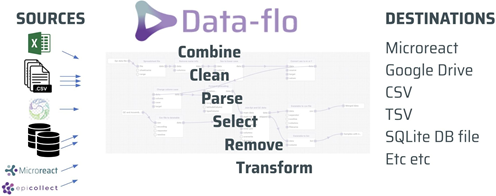
Why use Data-flo?
Data-flo saves you time by removing the bulk of the manual repetitive workflows that require multiple, sequential, or tedious steps, enabling you to focus on analysis and interpretation.
Armed with Data-flo, users can:
Rapidly prepare data for visualisation, and reporting
Easily share processed data between teams
Consistently reproduce and validate data transformation procedures for updated or new datasets
Seamlessly integrate data from multiple databases and sources
Automatically update a Microreact project with fresh data
While Data-flo is used across many sectors (data science, academia, public health institutions etc.), it contains a number of features tailored to manage bioinformatics-related datasets such as Newick files, tree files, etc.
Data-flo introduction
| Logging into your Data-flo account | |
|---|---|
Open Data-flo Navigate to Data-flo.
Select your preferred sign in method. Input the relevant login credentials
If using a locally installed version, use the login credentials assigned by your IT department |
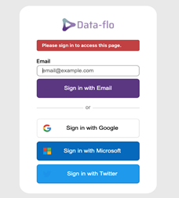 |
View your homepage Once signed in, all of your Workflow projects will appear on the main page.
|
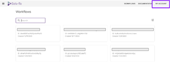 |
| Navigating Data-flo | |
Search your Workflows Use the search bar at the top of the screen to locate specific workflow projects. |
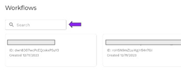 |
Access Data-flo’s main menu Select the This allows you to access the site’s main pages:
Send Feedback: This allows you to access a form to report bugs or errors in the site. |
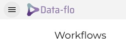 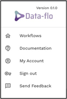 |
| Data-flo Edit and Run pages | |
Accessing the editor page All Data-flo projects are created and edited via the Editor page. This page displays the canvas and lists all the adaptors that can be added to a Data-flo project. |
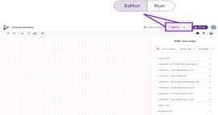 |
Accessing the run page Once a Data-flo project has been created, it can be run by anyone with access by uploading the necessary data files. The run page is where users can upload specific files and run the pipeline created on the editor page. The user will upload the data inputs or files specified in the editor page, and see the data outputs whether a csv, url or other file type. Toggle between the Editor and Run pages by clicking the edit and run buttons at the top right corner of the screen. |
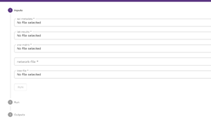 |
| Sharing Workflows between users | |
Data-flo gives you the option of sharing your Workflows with other users. You can control whether the other users can manage, edit or run your Workflow. For example, users can be given access to the editor page if they are allowed to edit the Workflow such as changing adaptors or managing the input arguments. Alternatively, users may be restricted to accessing only the run page if they only require the outputs of the Workflow. Manager level: Users can edit the workflow and share access with other users. Editor level: Users can view both the editor and run pages and can edit the workflow. Viewer level: Users can view the run page and also duplicate the workflow to save in their account. It is no longer tied to the original workflow and any edits they make are not reflected in the original workflow. Runner: Users can access the run page only. They can input the required files and will only see the outputs of the Workflow. |
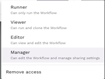 |
 at the upper leftmost corner of the screen.
at the upper leftmost corner of the screen.Data-flo Terminology
Workflows Workflows are Data-flo’s pipelines. They are combinations of adaptors that work together to edit, clean, merge and transform your data. Users set up a Workflow to perform data integration & manipulation: Ingesting data from one or more data-sources, combining, cleaning, harmonising, and reshaping it, and then sending the data onward in a format that’s ready for downstream applications or sharing. |
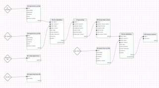 |
Canvas The canvas appears on the Editor page where Workflows are built. On the canvas, you can create, edit, and test Workflows to ensure they are functioning as intended. |
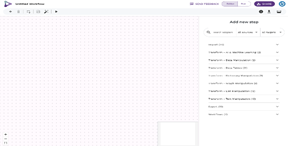 |
Adaptors Adaptors are the individual steps that make up a Workflow. There are adaptors that import data, export data and transform data. Each adaptor is pre-coded to transform data (such as changing column names, concatenating columns, filtering datasets, merging datasets) but users can customise adaptor arguments to tailor to their needs. |
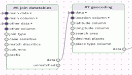 |
Adaptor input arguments and outputs Each adaptor consists of one or more options that users define to customise how the adaptor will treat your data. The inputs appear on the left side column of every adaptor. Some adaptors need multiple inputs (such as a join adaptor). The adaptor outputs appear on the right side column of each adaptor; this is the output of each transformed dataset. There may be one or more outputs. |
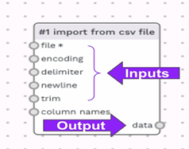 |
Data-flo basic functions and features
Add a new adaptor To begin building a workflow, users must add adaptors to the canvas. On the editor page which displays the canvas, navigate to the upper left corner to the 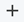 plus icon. Alternatively, when first opening the canvas, a panel on the right side is called “Add a new step”. This panel displays all available adaptors. Scroll through the list and double click one to add it to your canvas. |
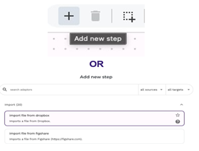 |
Connect two adaptors Adaptors can be linked together to combine their functions in sequence. Connecting adaptors is how to create a pipeline or Workflow. A connection takes the data output from one adaptor and inputs it to another adaptor to continue processing the data. Add at least two desired adaptors to the Canvas. Click the circle next to the output of the first adaptor. A grey connector will appear. Drag the connector to an input argument of the second adaptor. The data type must be compatible for a connection to be made, if the input for an adaptor is a datatable and you attempt to connect it to an adaptor with a list output, the connection won’t work. |
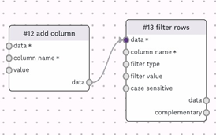 |
Running the Workflow in Editor When all required input arguments are correctly programmed, users can Test Run the workflow on the Editor page to ensure it functions as expected. Navigate to the upper left menu and click the Test run button. If there are no errors in the Workflow, all adaptors will be outlined in green. Clicking the “data” output will display the processed dataset. You may scroll through the data to ensure it meets your requirements. Clicking test run after each new adaptor can help you troubleshoot along the way and evaluate the output of each step as you build the workflow. |
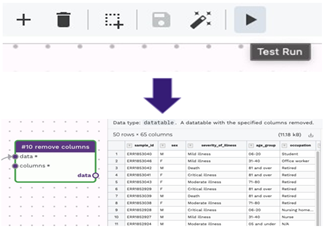 |
Debugging Workflow errors The Editor page allows you to build your workflows but also to test and debug them. After a workflow is run, if there are errors in any adaptors, the adaptor with the error will highlight in red and the right panel will give a brief error message. In the image to the right, an error is appearing because we did not connect the previous adaptor and thus the red adaptor has no data input to process. |
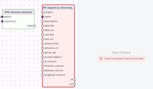 |
BRAINWORK
To learn and explore more on the advanced features of Data-flo, click on the link below: